一个学期之前就想学Spring…..
然而每天吃饭睡觉打豆豆就这样过去了，考完试这一周无所事事，还是打算学吧，毕竟以后工作也不好找。学吧….拖延症晚期的我，还是活生生的拖了三天才开始学…o(╯□╰)o
开始看着别人的博客，是吧、网上内容真的多，还有很多重复的，估计是ctrl c+v吧…不过很多都是SSM整体的配置，我又不用Mybatis，于是在这些博客中，开始剥离出我需要知道的….路漫漫其修远兮、哇，看不懂真的扎心啊 ╮(╯﹏╰）╭。不过俗话说得好，读书百遍，其义自见，看得多了，慢慢还是懂了点了。大概阐述一下辛酸历程吧和自己理解的一丢丢，虽然不知道理解的对不对，有错的请指点。
┐(´∀｀)┌看了些博客后，发现IDEA里面可以自带Spring-MVC (oﾟ▽ﾟ)o ？哇，开心啊。
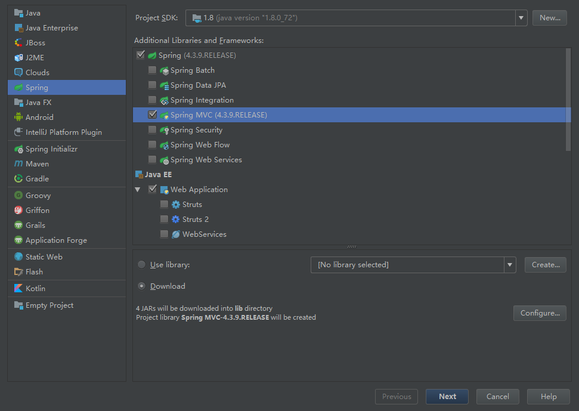
是这样的，就是这么简单。但是可能是因为我网络不好吧，就算我翻墙也下载不下来那个jar包，好吧，我放弃这个方法了(T＿T)。
于是开始看maven，这个我目前就晓得是个管理jar包的东西…暂时只用知道这个就行了，maven在电脑上配置好了之后，我又尝试了上面那种方法，因为我单纯的以为IDEA会使用maven下载，应该会快点吧，然而都是我一厢情愿…扎心
是吧、开始看新建maven项目，使用maven添加spring的核心依赖，配置那些xml文件的时候，哇，真的扎心啊。。。不过大概是我长得帅吧，在一阵瞎几把操作之后，？？？？我成功了？？？黑人问号….我也不知道为啥。对吧，慢慢来吧，开始凭记忆和自己的理解，尝试配置第二个，嘿嘿，我又成功了？开心啊︿(￣︶￣)︿
Spring，目前理解的只是一小部分，我只知道它拦截所有请求，然后通过一个分发器，处理这些请求。
———————– 来个分割线？(ﾟДﾟ#) ————————–
好吧、废话扯了一大堆。开始正文。
新建Maven项目
什么都不选，直接一路next就好….
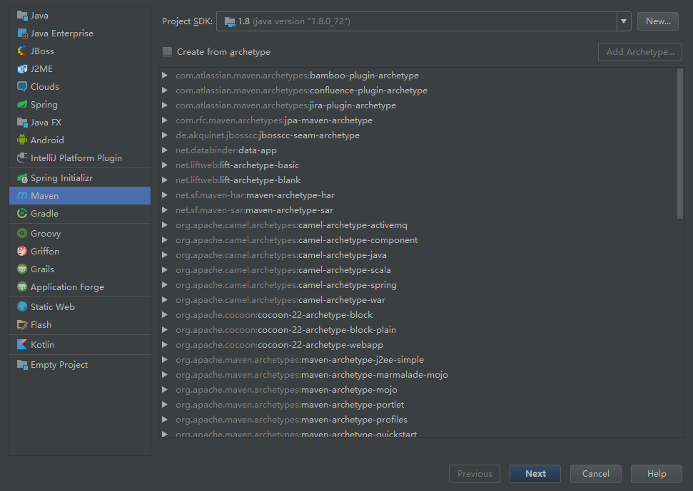
行吧，我觉得我还是稍微解释下，不然感觉这文章写得太水了…免得以后自己都不理解，在下图中，GroupId和ArtifactId，根据网上查阅，这两个是maven中标识用的，大概是姓名中的名和姓的关系吧（瞎扯的），网上有人说GroupId是包名，ArtifactId是项目名，好吧，我都弄得一样的，就是我项目名称Blog…
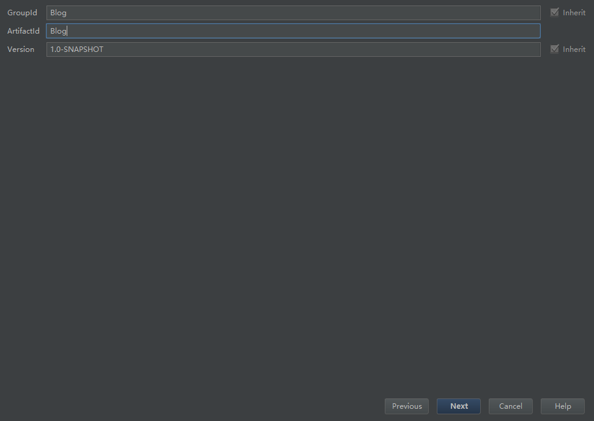
新建完界面如下。记得点右下角那个Auto-Import
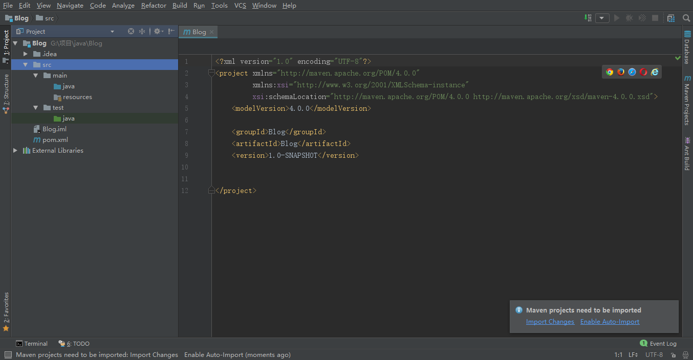
在modules中添加Spring
先进入项目Project Structure，左边选择modules，Add添加Spring模块

同样的添加web模块
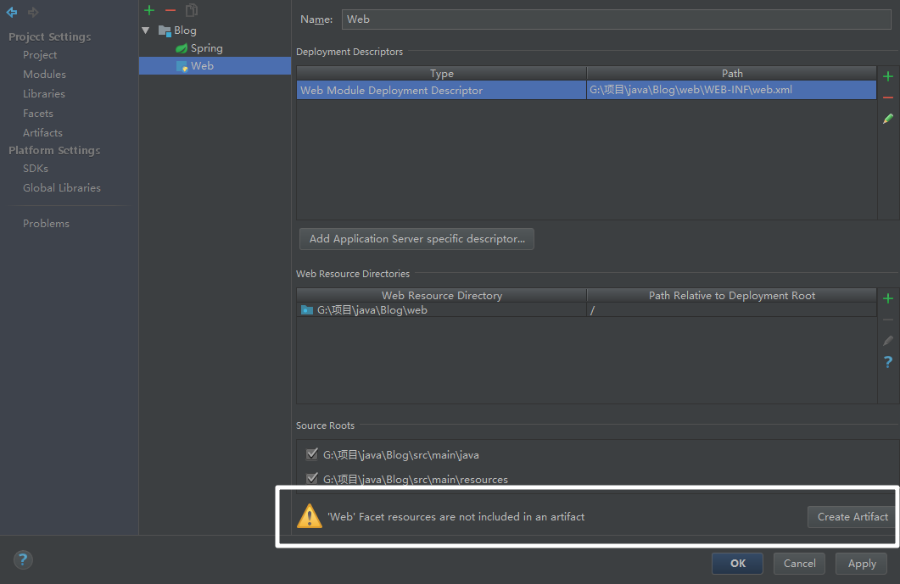
下面有一个报错，直接点击create 下一个界面之后apply就好~ok之后，界面如下，注意左边的项目结构
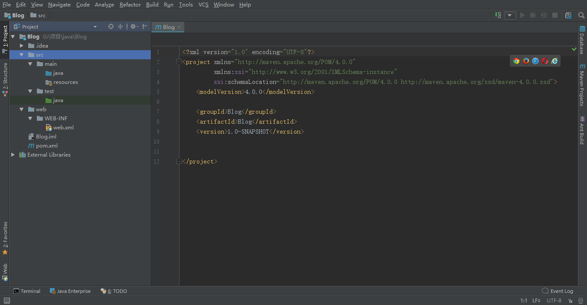
添加依赖
也就是添加项目所需要的jar包….毕竟是用的maven，所以在pom.xml文件中，添加依赖…添加完成后，pom.xml代码如下，分别添加了Spring和j2ee的：
1 | <?xml version="1.0" encoding="UTF-8"?> |
添加完成之后，maven会自动下载这些依赖文件的。可以在右侧maven projects中看到，如下图，若没有下载依赖，则点击刷新按钮，第一次添加依赖会从仓库中下载，如果maven没有更换镜像（自行百度），可能会很慢，最好使用vpn。
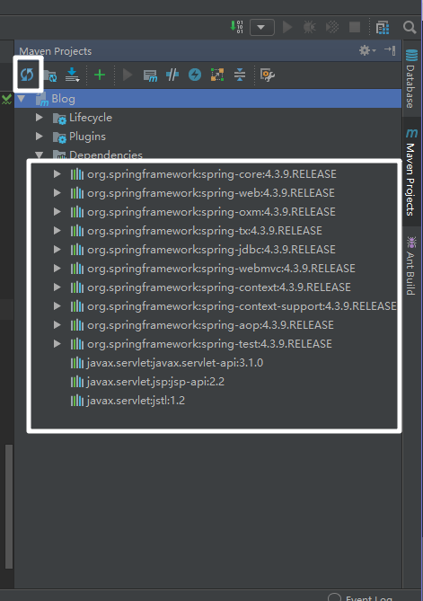
准备文件
直接看我目录结构吧~
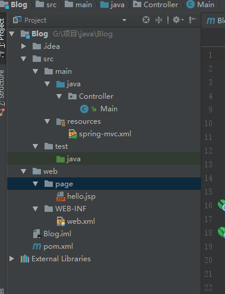
其中spring-mvc.xml是右击新建xml文件中spring配置文件，直接新建的。
Main.java文件中代码如下：
1 | package Controller; |
上述代码的意思差不多就是访问url为/hello/hello的时候，分配器将调用test函数，最后返回的是一个文件
配置文件
配置spring-mvc.xml
1 | <?xml version="1.0" encoding="UTF-8"?> |
配置web.xml
先看下整个web.xml
1 | <?xml version="1.0" encoding="UTF-8"?> |
其中拦截器就是目前我理解的最重要的一部分。
注意：url-pattern中/拦截类似于/log的url，不会拦截类似/log.html的url，/*拦截所有的
配置tomcat运行
运行结果
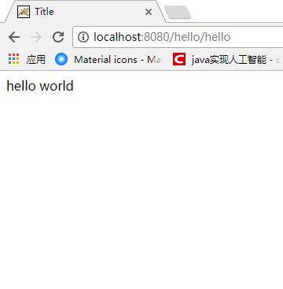
在运行之前，记得在project structure中artifact中将maven的依赖包添加到WEB-INF中，不然会出现NoClassFound报错。
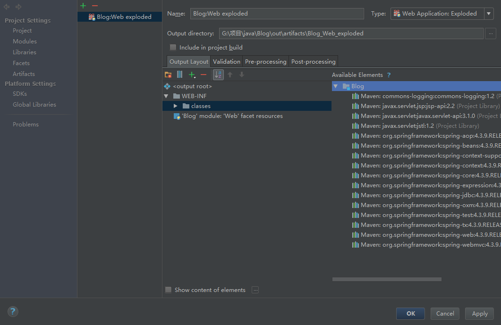
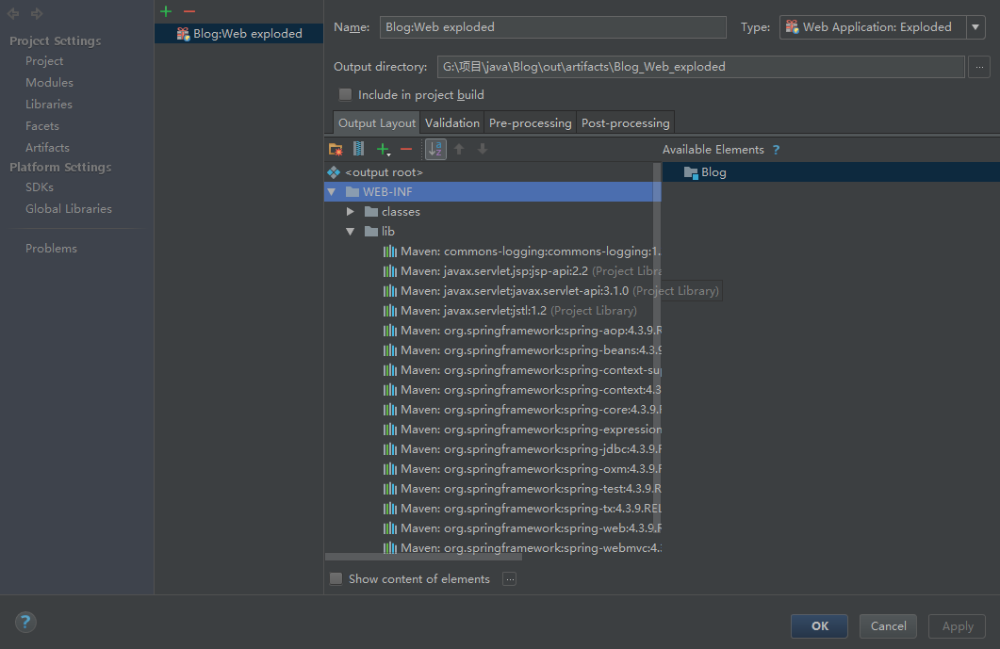
———————– 来个分割线？(ﾟДﾟ#) ————————–
写的过程中，才发现自己理解不透彻，真的很难讲述出来。。愿下次我还能看懂我自己写的吧。希望有帮助